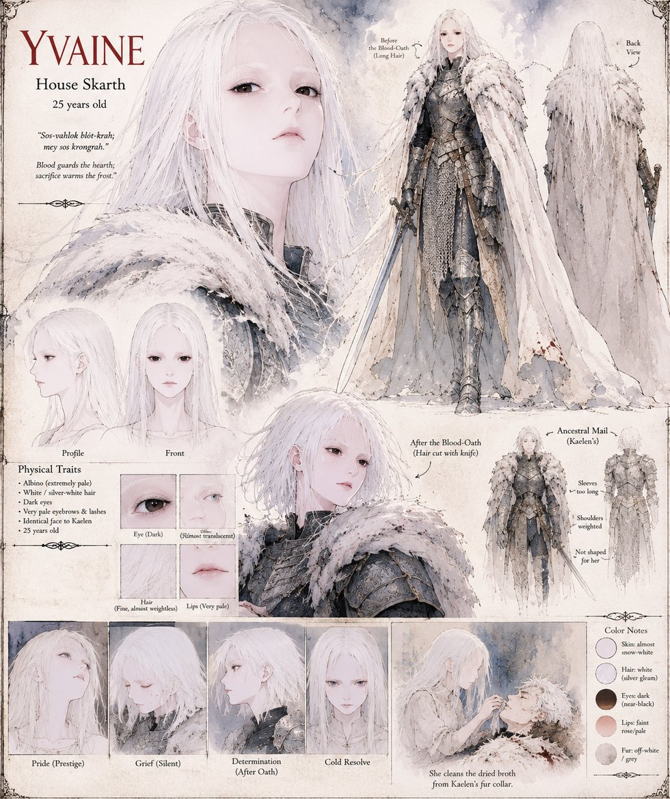

Yvaine
Lady of House Skarth · 25 years old · twin sister to Kaelen
Lady of House Skarth and Kaelen's twin — the guarded, suspicious half of a pair with one face between them. She argues against the hunt from the day the invitation arrives, and loses. After his death she cleans the dried broth from his fur collar herself, swears the Blood-Oath of the Vacant Hearth alone in the chapel — cutting her hair with a hunting knife and pulling on his too-large ancestral mail — and climbs Mount Skahr to ask its keeper for a blessing she doesn't quite believe in. She sends Duke Vane's gold and marriage contract back unanswered, spares the frightened border holdfast of Cindale, and ends the war in the hall of Duke Maros's captured keep, where she finds Vane himself. She does not ask his name; she has known it for a year.
“Sos-vahlok blót-krah; mey sos krongrah — blood guards the hearth; sacrifice warms the frost.”